Visão geral
Gestor
Sócio ou gerente cadastrado como gestor oficial da área. Define quem contata cada grupo e cobra o envio.
Responsável
Colaborador escolhido pelo gestor. Completa cadastros, marca elegíveis, envia o WhatsApp e registra o envio no sistema.
No sistema, abra Meus Clientes e clique em Ver guia para o tour interativo. Este manual é a versão com prints.
1. Gestor escolhe quem contata→
2. Completar cadastro→
3. Marcar elegível ao NPS→
4. Enviar link no WhatsApp→
5. Marcar NPS enviado (não desmarca)→
6. Cobrar a resposta
Parte 1 — Gestor da área
Passo 1 — Acessar Meus Clientes
- Entre no ORQESTRAI.
- No menu, abra Meus Clientes.
- Você vê os clientes da sua área, o progresso do cadastro e o botão Ver guia.
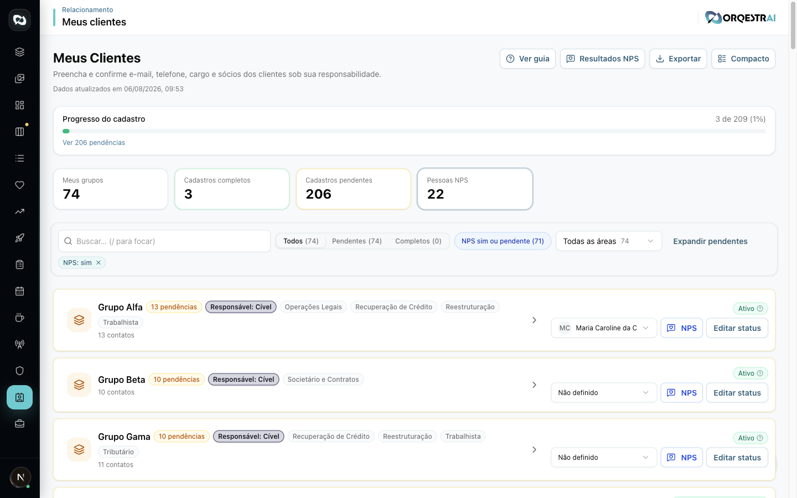
Passo 2 — Identificar pendências
- Olhe a barra Progresso do cadastro.
- Clique em Ver pendências ou no card Cadastros pendentes.
- Priorize grupos com badge de pendência.
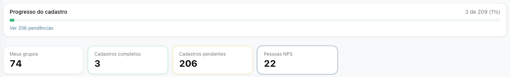
Passo 3 — Expandir um grupo
- Clique no card do cliente para expandir.
- Confira a área responsável e o status comercial (ativo/inativo).
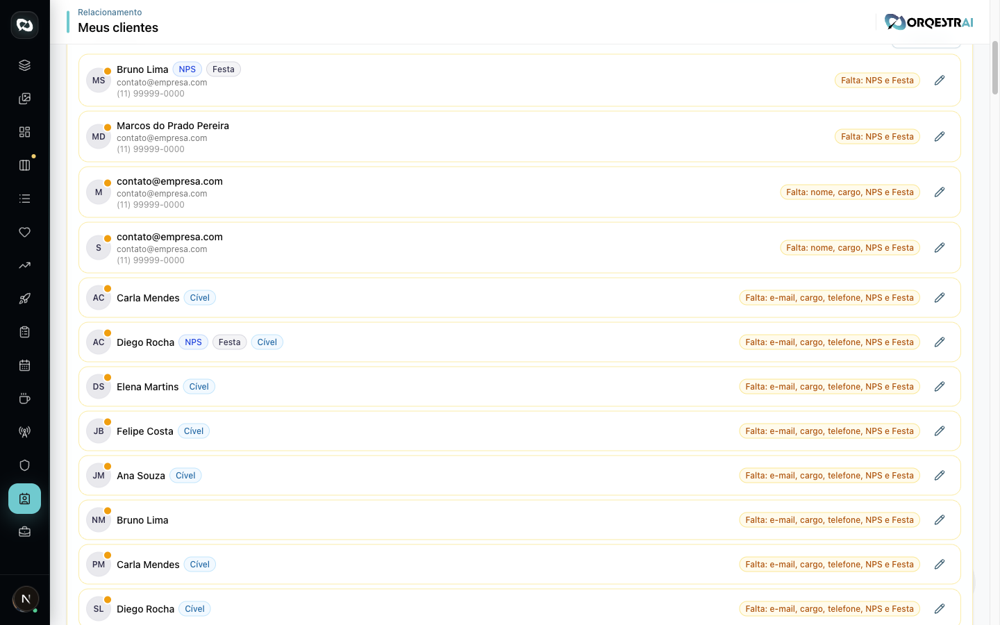
Passo 4 — Designar quem contata
- No card, abra o select Quem contata.
- Escolha um colaborador da mesma área do grupo (Cível só vê Cível; Recuperação de Crédito é área separada).
- A escolha salva sozinha. Repita para todos os grupos da área.
Só o gestor oficial da área edita este campo. Os demais veem o badge “Contato: Nome”.
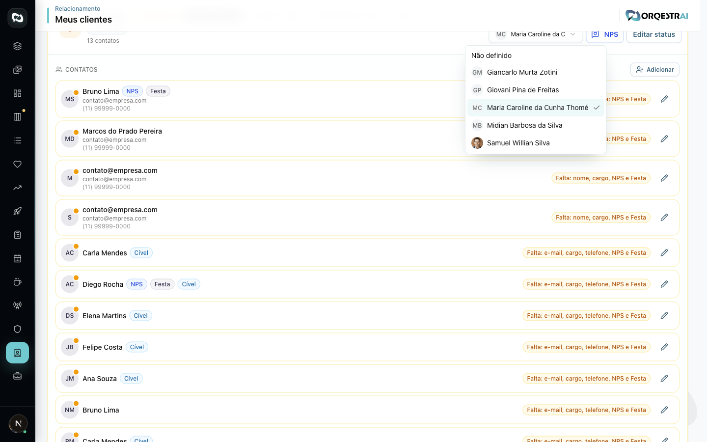
Passo 5 — Acompanhar o responsável
O gestor não precisa enviar o link (salvo se for a pessoa designada). Cobrar até:
- cadastros completos;
- contatos marcados como Elegível ao NPS;
- badge verde Enviado no card — essa marcação não pode ser desfeita.
Parte 2 — Responsável (quem contata)
Passo 1 — Localizar os grupos
- Abra Meus Clientes.
- Use busca ou o filtro de cadastros pendentes.
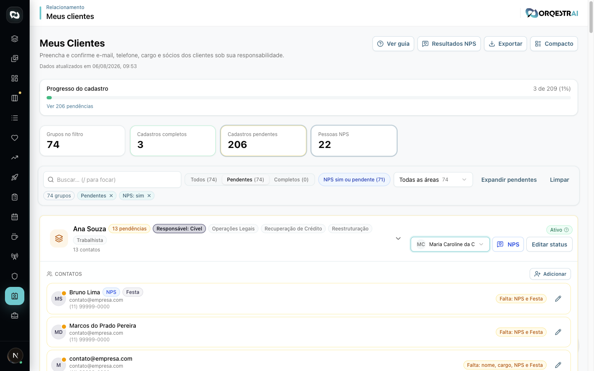
Passo 2 — Confirmar status comercial
- Expanda o grupo e clique em Confirmar status ou Editar status.
- Informe se o cliente está ativo ou inativo (com motivo e data, se inativo).
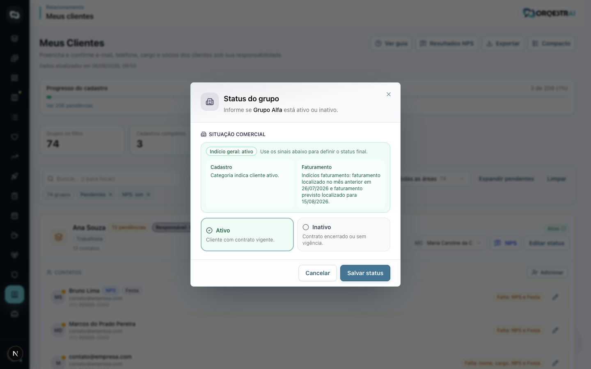
Passo 3 — Completar o cadastro
- Clique no lápis ao lado do contato.
- Preencha nome, e-mail, telefone e cargo.
- O checklist precisa ficar verde para o cadastro valer como completo.
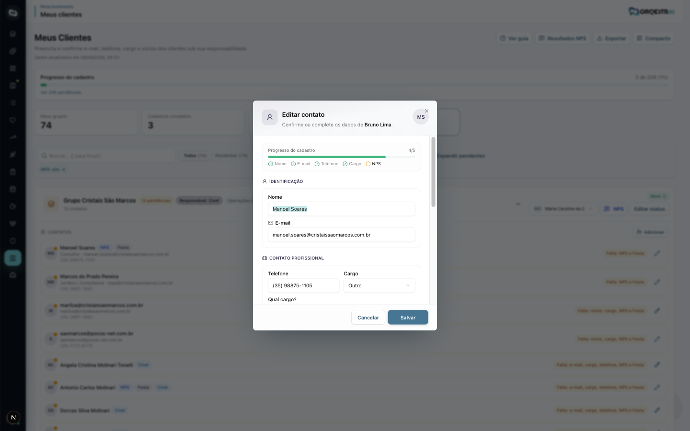
Passo 4 — Marcar elegíveis ao NPS
Na seção Classificação do mesmo formulário:
- Marque Elegível ao NPS para quem pode responder a pesquisa.
- Se a pessoa não participa, use Sem NPS.
- Salve.
A Festa de 10 anos fica inativa para gestor/colaborador — só a administração altera.
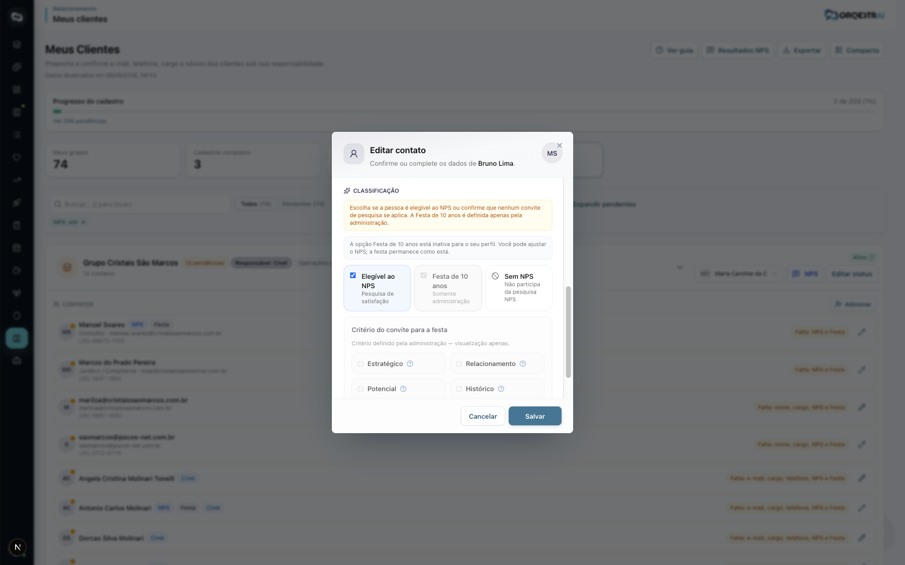
Passo 5 — Gerar e enviar o link
- No card do grupo, clique em NPS (precisa haver pelo menos 1 elegível).
- Copie o link ou a mensagem WhatsApp.
- Envie ao cliente.
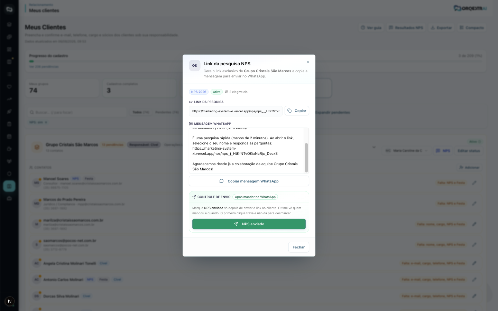
Passo 6 — Marcar NPS enviado (obrigatório e irreversível)
Atenção: enviar no WhatsApp não registra sozinho no sistema. Depois do envio real, clique em NPS enviado.
O primeiro clique trava o campo (quem enviou e quando). Não é possível desmarcar.
- O card passa a mostrar o badge verde Enviado.
- Só clique depois que o link já tiver ido para o cliente.
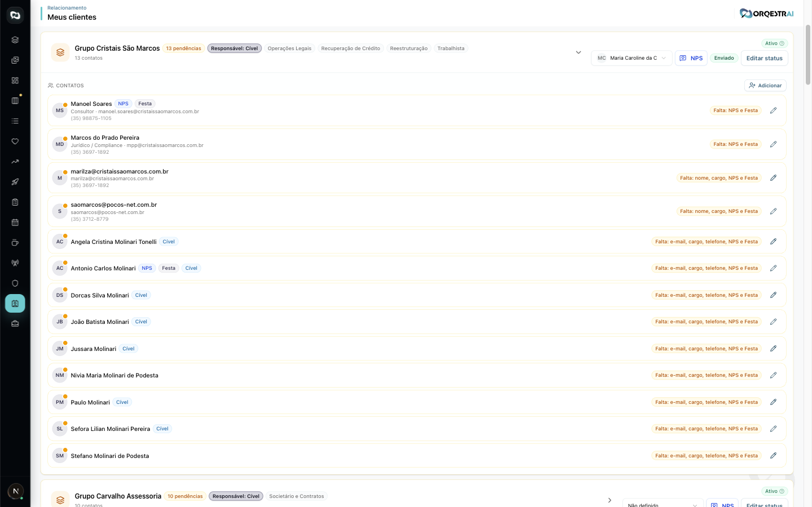
Passo 7 — Cobrar a resposta
- Se o cliente não responder, cobre por WhatsApp, e-mail ou ligação.
- No dialog NPS, a seção Já responderam lista quem concluiu.
- Para a visão da área, use Resultados NPS.
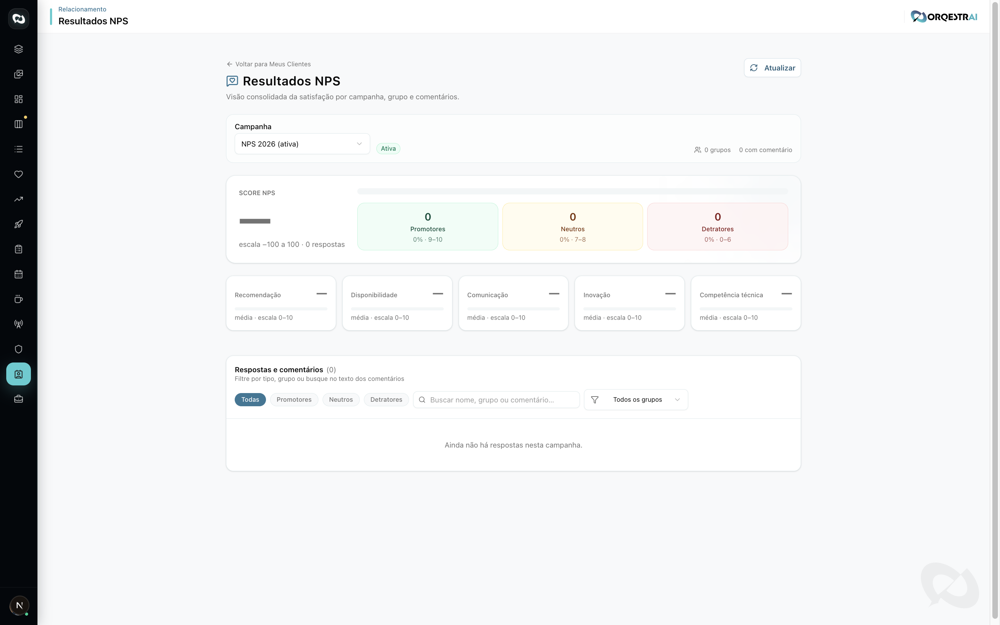
Checklist rápido
Gestor
- Todos os grupos com Quem contata
- Responsáveis cientes da tarefa
- Acompanhar grupos sem badge Enviado
- Cobrar cadastros pendentes
Responsável
- Status comercial confirmado
- Nome, e-mail, telefone e cargo
- Elegível ao NPS marcado
- Link enviado ao cliente
- NPS enviado marcado (não desmarca)
- Cliente cobrado até responder
Perguntas frequentes
- Por que o botão NPS está desabilitado?
- Nenhum contato do grupo está marcado como Elegível ao NPS, ou o cadastro ainda está incompleto.
- Preciso marcar NPS enviado depois de mandar o link?
- Sim. O WhatsApp não registra sozinho. Abra o dialog e clique em NPS enviado.
- Dá para desmarcar se cliquei por engano?
- Não. O primeiro clique trava quem enviou e quando.
- Cível e Recuperação de Crédito são a mesma área?
- Não. O select Quem contata lista só pessoas da área exata do grupo.
- Como rever o tour no sistema?
- Em Meus Clientes, clique em Ver guia.